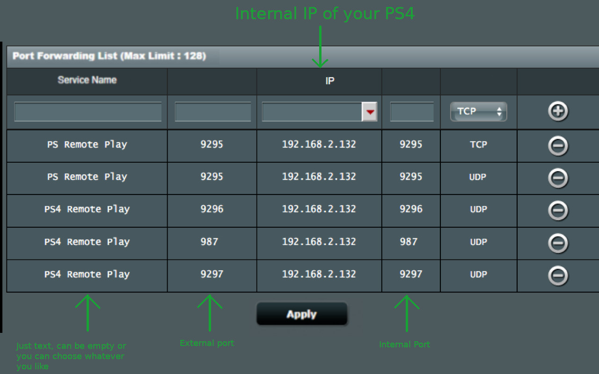

Follow this Guide to get started with PSPlay
Thank you for downloading and using PSPlay, this guide summarizes the most important information of PSPlay.
Disclaimer: PS5, PS4, PlayStation 5, PlayStation 4, Dualsense, Dualshock and PSN are trademarks of Sony Computer Entertainment Inc. PSPlay is in no way endorsed by or affiliated with Sony Computer Entertainment Inc, or any associated subsidiaries, logos or trademarks.
You need to meet following requirements to fully enjoy PSPlay.
PSPlay even works on low end smartphones. However keep in mind to lower the resolution and the fps settings for such devices in order to guarantee good performance and low latency while streaming.
If you use PSPlay for the first time you have to register your PS5/ PS4 with PSPlay. This is only possible when you are in the same network than your PlayStation, a registration from outside your network is not supported because of security reasons. The following sections will enlighten you about the most important information
Step 1 - Be sure your smartphone and your PlayStation are connected to the same network. Ideally your PS5/ PS4 is using a wired internet connection via a LAN cable to provide best streaming performance.
Step 2 - In order to activate Remote Play on your PS5/ PS4 you must be logged in with your PSN account on your PS5/ PS4.
On your PS5 navigate to Settings - System - Remote Play and activate "Enable Remote Play". Then go to Link Device where you should see the 8 digit
registration number.
On your PS4 navigate to Settings - Remote Play Connection Settings and activate the "Enable Remote Play" checkbox. Then go to Add device where you should see the
8 digit registration number.
Step 3 - Open PSPlay and click the "Register PS" button. On the next screen you can choose if you want to register a PS5 or a PS4. If you have made your decision you can enter the 8 digit registration number on the next screen. If you want to register a PS4 with an older firmware you can choose the firmware of your PS4 in the drop-down list. If you do not know what that means just leave the default values. PSPlay supports PS4 firmware from 5.05 - 8.03+. If you are ready Click the "Register" button on the bottom of the screen.
Step 4 - You will now see the official Sony account website. At this point you must sign in to your PSN account which you want to use for Remote Play. If you do not want to sign in you can also activate the "Register PS4 manually" checkbox in the previous screen. However since the PS4 firmware 7.0 Sony requires the Account-ID for the registration process which is unique number linked to your PSN-Account. If you do not know it by heart your only option is to continue with the sign in process. If you use an older firmware than 7.0 you can just use your well known Online-ID (Your PSN user name) during the manual registration process. Please keep in mind that without a PSN login an automatic remote connection over the internet will not be possible.
Disclaimer from the developer: I know providing your account details seems to be shady and I wished there would be another method to get the Account-ID but unfortunately there is no other easy way and some features like the automatic remote connection over the internet are only working via PSN. However, PSPlay just opens the official PSN Log-In website from Sony and there is no technical way that PSPlay could in any way intercept, monitor or modify the data you have entered there. PSPlay only receives some generic profile information as response from the official Sony server and only the Account-ID and the Online-ID will be stored locally on your device. If really want to avoid using PSN read this.
Step 5 - If the registration was successful you will be redirected to the Home screen of PSPlay where you can now choose to "Local Connect" or "Remote Connect" to your PS5/ PS4. If you received an error please go to Troubleshooting
Once you have successfully registered your PS5/ PS4, you can choose "Local Connect" or "Remote Connect" in the Home view of PSPlay to establish a connection to your console. If you are on the same network than your PlayStation simply click "Local Connect". If you have problems with "Local Connect" or if you want to play over the internet choose "Remote Connect". In order to connect remotely you must configure port forwarding rules on your router at home or since PSPlay 5.0.0 you can activate the automatic remote connection feature in the streaming settings of PSPlay to automatically connect over the internet without the need to configure your router, see section Playing over the internet for more information) Once the automatic remote connection feature is enabled in the streaming settings your can choose if you want to connect manually or automatically. If you choose connect manually, you can either enter the IP address of your PlayStation if you are in the same network than your console or the IP address of your router if you want to connect from outside your network at home.
PSPlay also allows you to just connect as controller without audio and video streaming so that you can use your smartphone as Dualshock controller. Just click on the 3 dots in the upper right corner in the Home view of PSPlay, and click "Gamepad Mode". If you want to use PSPlay as second gamepad in addition to your real Dualsense/ Dualshock controller you must have at least a second PS5/ PS4 guest profile on your PS5/ PS4. The real Dualshock controller must then be connected to the PS5/ PS4 profile which is not currently used by the PSPlay Remote Play client, otherwise the Remote Play connection will be terminated. During the gamepad mode no Audio and Video stream will be processed but the console is sending these data anyway so please keep in mind that this will have an impact on your internet traffic.
Unlike the official PS Remote Play app PSPlay can be registered with multiple PS5/ PS4 profiles. A profile is linked to one specific PSN account on one specific PS5/ PS4 console. If you have multiple PS5/ PS4 consoles and/ or multiple PSN accounts, PSPlay is able to register more than one profile. If you have already registered a profile just open navigation drawer on the top left corner of the Home screen and click "Register new PS5/ PS4". You can switch to another PS5/ PS4 profile by clicking "Profiles" in the navigation drawer and click on the "PS5/ PS4 profile" setting entry on the next screen.
PSPlay offers you the possibility to customize the on-screen gamepad layout for both the "Remote Play Mode" and the "Gamepad Mode". You can either create a new remote layout by clicking "Remote layout" or you can create a new gamepad layout by clicking "Gamepad layout" in the navigation drawer. You can switch the layouts by clicking "Profiles" in the navigation drawer and click on the "Remote gamepad layout" for changing the remote layout or the "Gamepad layout" for changing the gamepad layout.
On Android you can connect any controller which is compatibly with Android 5.0 an above via Bluetooth or USB. On iOS or tvOS any MFI compatible controller should work. Because of performance problems due hardware limitations on many Android devices it is strongly recommended to use a wired USB connection for your gamepad on Android. Otherwise high input latency and input delays can occur. If you ever encounter some unusual lags please connect your gamepad via USB if possible. Please note that this is not the fault of PSPlay, the reason why this happens is because of some hardware limitations of your Android device and that there is no way that PSPlay could fix this.
If the button mapping of your controller is weird you can create a button mapping profile for your controller by clicking "Button mapping" in the navigation drawer. If one of your gamepad buttons is recognized as Home button you will not be able to use this button as an app can not override this behaviour. However, you can then use the "Use 2 buttons combination" feature in the mapping process instead.
Note from the developer: Please read this whole section carefully and follow ALL instructions. If something isn't working as expected it's most likely that your internet service provider is not allowing it. You can find all the information below.
PSPlay can also be used over the internet when you are not at home. You can either activate the automatic remote connection feature in the streaming settings or you can configure your router manually so that you can connect from away without using PSN (e.g. if you are using a jailbroken PlayStation)
Since PSPlay version 5.0.0 you can automatically connect to your PlayStation over the internet. If you have already registered PSPlay with your PlayStation with an older version than PSPlay 5.0.0 please re-register PSPlay with your console. During the registration process it is required to perform a PSN login as the automatic remote connection requires PSN credentials. Once successfully registered you can activate the "automatic remote connection" feature in the streaming settings of PSPlay. Afterwards you can click on "Remote Connect" in the Home view of PSPlay and then you can select the "Automatic" remote connection.
If you have PSN login problems please read this. Please note that this feature is currently experimental and that it may not work in all networks. It may fail for example if your PlayStation has NAT type 3. More information about the NAT types can be found here. One reason why your PlayStation is displaying NAT Type 3 could be that your Internet service provider is not assigning a real public IP address to your router, if that is the case you must call your internet service provider and ask if they could assign your router a real public IP address.
There are also some requirements in order to be able to automatically connect to your PlayStation over the internet without the need to configure your router at home
If some of these requirements can't be fulfilled you must configure your router in order to be able to establish a connection over the internet. All information available below.
The following section explains how to manually configure port forwarding on your router.
In order to configure your router you must access your router's dashboard. To configure your router you must be in the same network than your router (e.g. your WiFi network at home). It is recommended to do this on a PC but can of course also be performed on any other device which has a web browser. Open a web browser such as Google Chrome or similar. Go to the Address bar and enter the IP Address of your router. If you don't know the IP address of your router click here for an explanation of how to find it out.
If you are on your router's dashboard you have to navigate to the port forwarding section. Please note that each dashboard looks different, it could probably be located under "WAN" settings, "Internet" settings or similar. Following ports to the internal IP-Address of your PS5/ PS4 must be forwarded:
! You must forward ALL of the following ports and you must use the correct protocol for the ports! (Please note: port 9295 is UDP AND TCP) !
You can find below an example of how the port forwarding settings should look like if you configure port forwarding for your PS4 (but it might look a little bit different on your router so just keep that in mind). Some routers allow the configuration of an external and internal port, others do not. If you can configure an external and internal port provide the same port on both of them. Please note that you don't need UDP port 987 but UDP port 9302 if you configure port forwarding for PS5.
Once you've set up port forwarding correctly, you need to figure out the public IP-Address of your router. Go to https://www.whatsmyip.org/ with a device connected to your network at home, then enter the IP-Address you get there into the "Remote Connect" dialog of PSPlay. If you don't get an error, you should be all set. Keep in mind that the public IP-Address of your router can change from time to time, this depends on your internet provider. So if streaming over the internet is suddenly stop working and it worked before perfectly fine, please be sure to check the public IP-Address of your router again. Furthermore, it is strongly recommended to configure a static IP-Address for your PS5/ PS4. Otherwise you will have to adjust port forwarding settings every time your PS5/ PS4 gets another IP-Address from your router (which could occur every time the PS5/ PS4 restarts). An example of how to configure a static IP for your PS5/ PS4 can be found HERE.
You can find a guide on how to port forward on most routers HERE (Don't be bothered by the "Portforward Network Utilities" ad, just close it, this is not required).
If you get an error like "IO_EXCEPTION_OCCURRED. GET Session" or "Connection failure! A connection could not be established" upon using "Remote Connect" multiple times then there might be something wrong with the port forwarding settings or your internet provider might not allow it. Please keep on reading for further instructions.
Some routers allow you to configure a port range (start and end point port) or even to configure an internal and external port. If that is the case just provide the same port on all these available options.
If port forwarding is configured correctly you should be able to connect to your PS5/ PS4 by using the "Remote Connect" button on the Home screen of the PSPlay app. You would need to enter the public IP-Address of your router. Keep in mind that you MUST enter the public IP-Address of your router in the "Remote Connect" dialoag and NOT the IP of your PS5/ PS4 if you want to connect from outside your network.
You can verify if the port forwarding was configured correctly by visiting following website https://www.canyouseeme.org/ with a device connected to your network at home (same network than your console) and enter port 9295 in the "Port to Check" textbox. Canyouseeme should report that the port is open, if not be sure your PS5/ PS4 is turned on. If it is turned on and the website is still reporting that the port is not open then there is something wrong. Other ports are just active while streaming so you must enter only port 9295. If the other ports are configured correctly and canyouseeme reports that port 9295 is open connecting over the internet should work fine when you enter the public IP-Address of your router into the "Remote Connect" dialog of PSPlay.
If something did not work please double check if you have configured the correct protocol for the individual port mapping rules on your router (UDP/ TCP). Port 9295 needs two rules, one for UDP and one for TCP. If you still have some problems, please check if the public IP-Address which you should see somewhere on the dashboard of your router (probably in the WAN section) is equal to the one which you get by visiting https://www.whatsmyip.org/ with a device inside your network at home. If not, then this is probably an indication that your internet provider doesn't give your router a "real" public IP-Address, which means your router is not accessible over the internet. If that is the case you have to contact your internet provider and ask if they could provide you a "real" public IP-Address, otherwise connecting to your PS5/ PS4 from outside will not be possible for you.
Another problem could be if your internet provider doesn't provide your router an IPv4 but only an IPv6 IP-Address. As remote play does not support IPv6 you must contact your internet provider and ask if they could also assign an IPv4 address to your router in addition to the IPv6 address. Please note, if you are affected by the last two problems (no "real" public IP-Address, only an IPv6 IP-Address) there is nothing PSPlay can do about. Providing a bad rating doesn't help either as I can't workaround these errors. If you have any specific questions just contact me BEFORE providing a bad rating.
Please note: the connection quality and streaming latency heavily depends on the quality of your internet connection and on many other external factors. If there are lot of interferences please try to reduce the resolution and the FPS settings.
If the automatic remote connection feature doesn't work for you, PSPlay can automatically configure your router for playing over the internet but your router has to support UPnP and this feature must be enabled on your router. Please note, not all routers support UPnP or do not allow an automatic configuration because of security reasons. If PSPlay reports that it is not able to find your router or that an other error occurred you must configure your router manually. You can find more information here. As there are 1000 of different router models available PSPlay cannot guarantee that an automatic configuration will work on all routers. Some routers even have a faulty UPnP implementation which also prevents an automatic configuration.
If your router do not support UPnP or an automatic configuration is not possible because of security reasons you can simply configure your router manually. All information for a manual configuration can be found here. Below you can find an explanation of the common error messages:
This means that either UPnP is not enabled on your router or that the UPnP implementation of your router is not compatible with PSPlay. You have to check if your router supports UPnP and if this feature is enabled. If it is enabled and it is still not working you have to configure your router manually. All information for a manual configuration can be found here.
An unexpected error occurred while PSPlay was configuring your router. Be sure you are connected to the same WiFi network than your PS5/ PS4. Your router might not fully support UPnP or is blocking the configuration attempt because of security reasons. You might need to configure your router manually. All information for a manual configuration can be found here.
Your router does not allow an automatic configuration because of security reasons. You have to configure your router manually. All information for a manual configuration can be found here.
An unknown error occurred while configuring your router. Your router may not fully support UPnP or the UPnP version of your router is not compatible with PSPlay. You have to configure your router manually. All information for a manual configuration can be found here.
Not all port forwarding rules could be configured correctly. Some routers do not allow to automatically configure port forwarding rules for ports smaller than 1024 and PS4 requires that port 987 must be forwarded in order to wakeup your console from sleep. You can probably play remotely but you will not be able to wake up your PS4 while you are not at home if you haven't registered PSPlay with your PS4 by using the PSN login. It is strongly recommended to configure your router manually and add the missing port forwarding rule. All information for a manual configuration can be found here.
Your router returned a unexpected public IP-Address. This could be an indication that your provider does not give your router a "real" public IP-Address. This means your router is not reachable from outside your network. Other possibilities for this warning could be that you have a double NAT configuration at home (your router is behind another router which creates two different networks) or that you are using a hybrid router with two different network technologies like DSL and LTE. The latter should not be a problem, however if you have a double NAT configuration at home or if your internet provider does not provide your router a real public IPv4, playing over the internet will probably not be possible for you. In any case you should contact your internet provider and ask if your router has a "real" public IP-Address and if not if they can assign you one.
If your router does not have an IPv4 but only an IPv6 IP-Address you can not connect to your PS5/ PS4 from outside your network. You must contact your internet provider and ask if they can assign your router an IPv4-Address in addition to your IPv6-Address.
If you are using a controller where the button mapping is messed up or you just want to change the button mapping, you can create a button mapping profile by clicking on "Button mapping" in the navigation drawer. After providing a unique button mapping profile name you can start to map individual buttons of your gamepad. Just be sure your gamepad is properly connected via Bluetooth or via USB. Please be aware that your gamepad might behave differently whether it is connected via Bluetooth or USB, so you may have to create two individual button mapping profiles.
On some devices a button on your gamepad may be interpreted as "Home" button, if that is the case you can use the "Use 2 buttons combination" feature to trigger this button by pressing a combination of two other buttons on your gamepad. You can also use this feature if you have too few buttons on your gamepad left. Again: if one of your buttons on your gamepad will be interpreted as "Home" button you will not be able to use it as an application can not override this behaviour.
More detailed instructions are available here. You should definitely read this if you have PSN login problems
Recently, some users reported problems when performing the PSN login. They will get an error message "A connection to the server could not be established". This seems to be an error on the Sony PSN login website. This PSN login is required since PS4 firmware 7.0 to get your PSN-Account-ID which is required for registering with your PS5/ PS4. There are some other possibilities to get your Account-ID.
(trinket website doesn't work anymore, more information here)You can go to a PC and open this website and just follow the instructions that appear there. Please note, in the result of the trinket website your actual account id is next to the user_id variable and should look something like this
'user_id': '4474834823397313449'
It consists only of numbers. Here again is the full link of the trinket webpage:
If you are still getting the same error or another error please be sure the PSN credentials you are entering on the Sony PSN login page are correct otherwise you could also try using a free VPN service and pretend you're in a country other than the one you are actually in (also using another Browser might help). Then try to follow the instructions of the website above again.
If you have successfully queried your Account-ID you can register with your PS5/ PS4 manually without performing a PSN login. In the Register view of PSPlay just activate the "Advanced Settings" check "Register PS5 manually"/ "Register PS4 manually" and add the Account-ID in the textbox.
Thanks to CSystem77 for providing this script at trinket.io.
It's very likely that you are suffering from an Android 11 bug introduced by Google. You can find more information here. Here is the official Google bug report with a few suggested workarounds https://issuetracker.google.com/issues/163120692?pli=1. On some devices, it helps to disable all accessibility services and restart the device. It's really an annoying issue which is already fixed in Android 12. It's not the fault of PSPlay.
If possible be sure your device is connected to a 5GHz WiFi network instead of a 2.4GHZ. 5GHz networks are usually less prone to interference.
Be sure your PS5/ PS4 is connected to the internet via LAN cable.
Lower the resolution and the FPS settings.
Some Android devices are affected by a network performance problem. In order to fix this simply place your Android device in flight mode and re-enable WiFi afterwards. Restart the PSPlay app and check if it works. Furthermore, an active Bluetooth connection can also interfere the network stability on some devices. Please check if the connection is more stable when you deactivate Bluetooth completely.
Be sure your smartphone is in the same network than your PS5/ PS4.
Be sure that your have enabled Remote Play on your PS5/ PS4. (PS5: Settings - System - Remote Play and activate "Enable Remote Play". PS4: Settings - Remote Play Connection Settings and activate the "Enable Remote Play" checkbox)
Restart the PS5/ PS4 and the PSPlay app and try again. Also, make sure that the device you're using PSPlay on doesn't have a VPN connection or an ad-blocking app activated, otherwise the connection to your PlayStation could be blocked.
If you are not playing over the internet be sure that your smartphone and your PS5/ PS4 are connected to the same network.
If you play over the internet and you have configured your router, please check your port forwarding settings again. Your PS5/ PS4 might got another IP-Address from your router at home or your routers public IP-Address might have changed. Please be aware that you have to use "Remote Connect" in order to connect to your PS5/ PS4 over the internet and that you have to provide the public IP of your router in the "Remote Connect" dialog. If you want to connect remotely automatically, make sure your PlayStation has the latest firmware installed. Sometimes restarting the console could fix the problem. More information can be found in the section Playing over the internet
Be sure your PS5/ PS4 is turned on or at least in rest mode. If a PS5/ PS4 is turned off PSPlay can't wake it up. Also, make sure that the device you're using PSPlay on doesn't have a VPN connection or an ad-blocking app activated, otherwise the connection to your PlayStation could be blocked.
Please be sure that your PS5/ PS4 stays connected to the internet during rest mode. On PS5 navigate to Settings - System - Power Saving - Click Features Available in Rest mode and check if both the "Stay Connected to the internet" and "Enable Turning On of PS5 from Network" are activated. On PS4 navigate to Settings - Power Saving Settings - Set Features Available in Rest mode and check if both the "Stay Connected to the internet" and "Enable Turning On of PS4 from Network" are activated.
If you have this problem, please stop PSPlay and reconnect your controller to your device. Open the PSPlay again and connect to the PS5/ PS4, the problem should be gone. On some devices, connecting a controller while streaming could lead to delays and other problems. In order to avoid this please always connect your controller before you start streaming.
Despite huge efforts to make the audio work on all Android devices when a wired Dualshock controller is connected some devices still try to route the audio to the controller which will result in no audio at all while streaming. However, if you have this problem there is a workaround. Just disable "automatic USB audio routing" in the developer options of your device. The developer options are hidden by default, follow the instructions below to disable USB audio routing:
Chrome OS offers Android app support, however some functionalities are limited and will not work. First of all, automatically discover your PS5/ PS4 will not work as the firewall on Chrome OS devices is blocking the discovery request. In order to register with your PS5/ PS4 or to simply connect, you have to enter the IP-Address of your PS5/ PS4 manually (if you want to connect over mobile data you have to enter the public IP-Address of your router. You can find more information here). Furthermore, some Chrome OS devices have faulty hardware decoders which may interfere the streaming experience. PSPlay was not designed especially for Chrome OS devices but only for Android, Android TV, iOS and AppleTV devices. I do not want to prevent installations on Chrome OS devices because on some Chrome OS devices PSPlay might work quite well, but please keep in mind that there could be some potential limitations when you are using PSPlay on Chrome OS.
There is a community available on reddit which you can find here https://www.reddit.com/r/PSPlay. You find many answered questions there and you can post new questions if you need to.
Please include following information in your email.